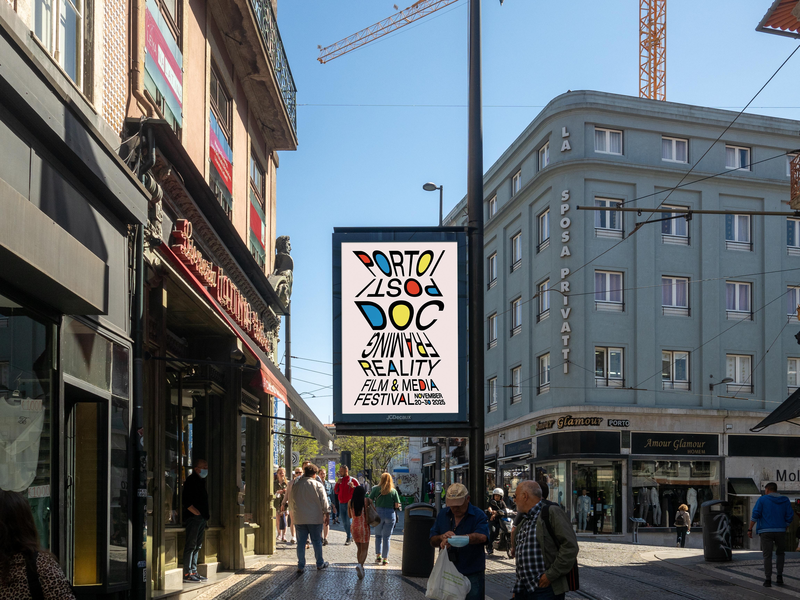

Dieses Poster wurde während meines Auslandssemesters in Portugal für das Porto/Post/Doc Festival gestaltet. Die verzerrten Buchstaben spiegeln den Fokus des Festivals wider, Grenzen zu verschieben, Konventionen in Frage zu stellen und die Realität durch Film neu zu rahmen.
Die kräftigen Farbakzente verleihen Lebendigkeit und Energie, sie reflektieren den kreativen Puls Portos und die Rolle des Festivals als Treffpunkt für Innovation im Film und in den Medien.
